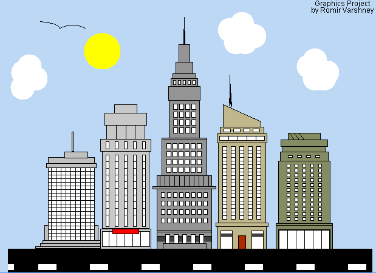

IB Senior at Stanton College Preparatory High School in Jacksonville, Florida
About Me
I am a self-driven and motivated 18-year-old Indian-American senior currently attending Stanton College Preparatory High School, enrolled in the International Baccalaureate Diploma Programme , in Jacksonville, Florida.
Through my studies and experiences, I have become proficient in numerous programming languages while also gaining experience in both Front-End and Back-End development. I've created and worked multiple projects. showcasing both in various programming languages.
In my free time, I actively participate in the cultural world around me, volunteering for various different projects and organizations, and even performing on stage in front of large crowds. I love tinkering with hardware, listening to (and creating!) music, and playing all types of sports (Go Jags!).
My ultimate goal is to work at a company that I feel utilizes my skillset in the best way possible, while also actively working to improve society and its foundations, both short-term and long-term.
Obtained a data science internship from NLP Logix, a company dedicated to employing machine learning, data modeling, and other specialties in order to automate data-driven business processes utilizing artificial intelligence for clients, after being recommended by my guidance counselor and undergoing an interview process. In it, I gained experience in navigating Tableau to visualize and analyze data and observe trends, and in using Python to learn the fundamentals of machine learning, by building predictive models. Utilized an NFL Play-by-Play data set to create the data visualizations and predictive models, and even presented our findings to the analytics team of the Jacksonville Jaguars. Click here to see more about NLP Logix.
Bank Account/Currency Conversion Program
Utilized Java and GUI from the IDE Eclipse to create a project for my IB Computer Science A class in my junior year. My GUI Program utilizes a variety of complexity components, including different classes/screens, file i/o, etc. to produce a program that is capable of storing, sorting, and deleting users, withdrawing and depositing money, viewing users, all while also changing the program currency into four different ones, changing the values in the program and database. Includes comments for the code that organizes and explains the code's purpose throughout the program. Took over 3 months to fully plan, design, program, test, and evaluate final product. Click here to learn more about the International Baccalaureate mission statement
Graphics Project

Program of a 2-D city consisting of 5 buildings, each with a multitude of windows, floors, and colors to it, giving the city a vibrant feel. Picture contains a sun, clouds, a bird, and a road as well as the 5 buildings. Image pulled from www.easy2dart.com, and was initially created in my freshman year through QBASIC. I then recreated the same picture in my junior year in Java. The Java program contains over 700 lines of code utilizing line and block commands, color, and circular and elliptical code in objects like the sun and the bird. Comments made throughout the program to help organize the code and make it easier to read and follow through. These projects were each completed in about a month, in class periods of 90 minutes, which occurred every other school day. Click here to access the QB64 file from my freshman year.
Selected specifically by my Computer Science teacher to teach and tutor students of Andrew Jackson High School in preparation for their AP Computer Science A exam, due to their teacher being out for an extended period of time. Includes teaching programming concepts such as arrays and loops, and helping guide through practice programs and tests. Classes took place during my scheduled programming class, on the last class of every week.